Lo nuevo de un vistazo
Todo el sistema se rediseñó con el mismo estilo del CRM: tarjetas, barra lateral con iconos de color y textos completos. Tus ventas, clientes, cortes e inventario no se tocaron.
Ventas
La pantalla donde se cobra todo el día.
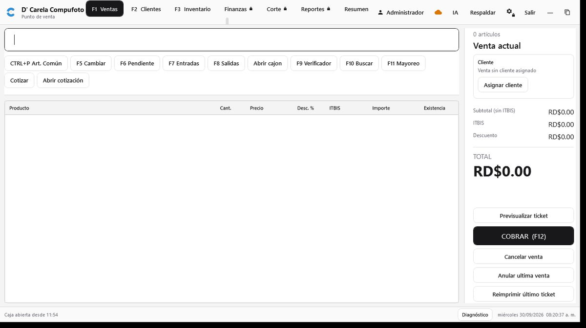
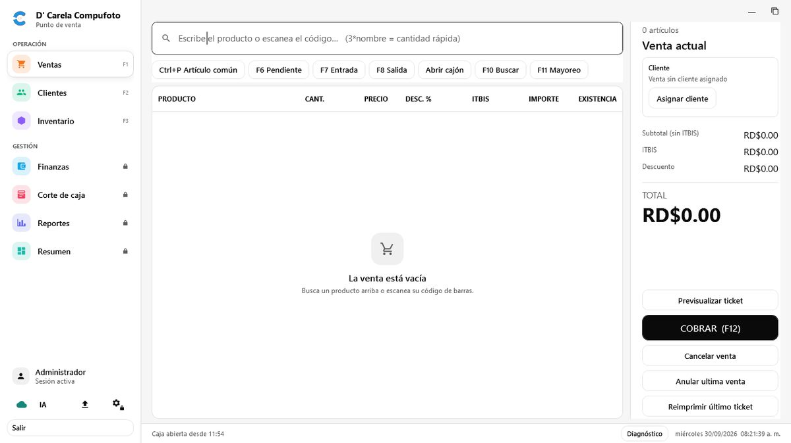
Qué cambió
- Buscador grande con ayuda: escribe el nombre o escanea el código de barras y pulsa Enter.
- Cantidad rápida: escribe 3*nombre para vender tres unidades de una vez.
- Atajos compactos con su tecla a la vista (F6 Pendiente, F7 Entrada, F8 Salida, F10 Buscar, F11 Mayoreo).
- Se retiraron las opciones que no se usaban: Cambiar (F5), Verificador (F9), Cotizar y Abrir cotización.
- Cuando la venta está vacía se muestra una guía en lugar de una tabla en blanco.
Paso a paso
- Busca o escanea el producto y pulsa Enter.
- Repite para cada artículo; cambia la cantidad en la columna Cant.
- Pulsa COBRAR (F12) o Enter con el buscador vacío.
Cobrar
La ventana de cobro es vertical y muestra siempre el total, lo recibido y el cambio.
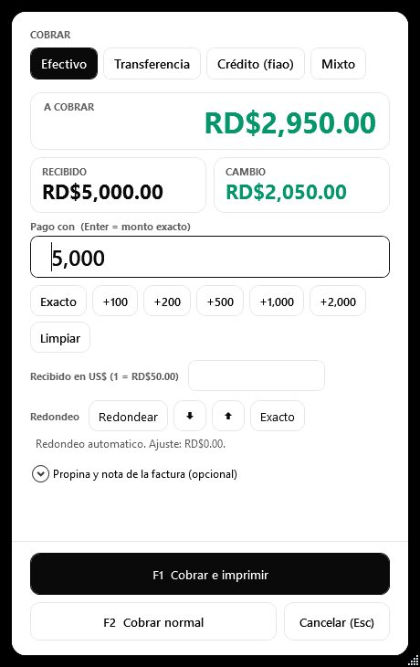
Qué cambió
- El CAMBIO se ve al instante, sin desplazarse.
- Métodos: Efectivo, Transferencia, Crédito (fiao) y Mixto. Se quitaron Tarjeta y Cheque.
- Transferencia aparece solo si la sucursal tiene una cuenta de banco; al elegirla se ve el logo del banco.
- Botones rápidos de billetes: Exacto, +100, +200, +500, +1,000 y +2,000.
- Propina y nota de la factura quedan plegadas; la nota se imprime completa en varias líneas.
Paso a paso
- Elige el método (Efectivo por defecto).
- Escribe lo recibido: el cambio se calcula solo.
- F1 cobra e imprime, F2 cobra sin imprimir, Esc cancela.
Cobrar por transferencia
Se elige la cuenta que recibe el dinero, para que el banco quede cuadrado.
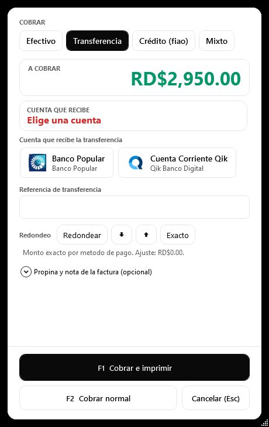
Qué cambió
- Las cuentas de banco creadas en el panel web aparecen solas como opción.
- Cada cuenta muestra el logo de su banco (Popular, Qik, Banreservas, BHD).
- La referencia del boucher es opcional; si ya existe te avisa.
Paso a paso
- Elige Transferencia.
- Toca la cuenta que recibió el dinero.
- Escribe la referencia (opcional) y cobra.
Caja y cortes
Lo esencial a la vista y lo ocasional dentro del menú Más.
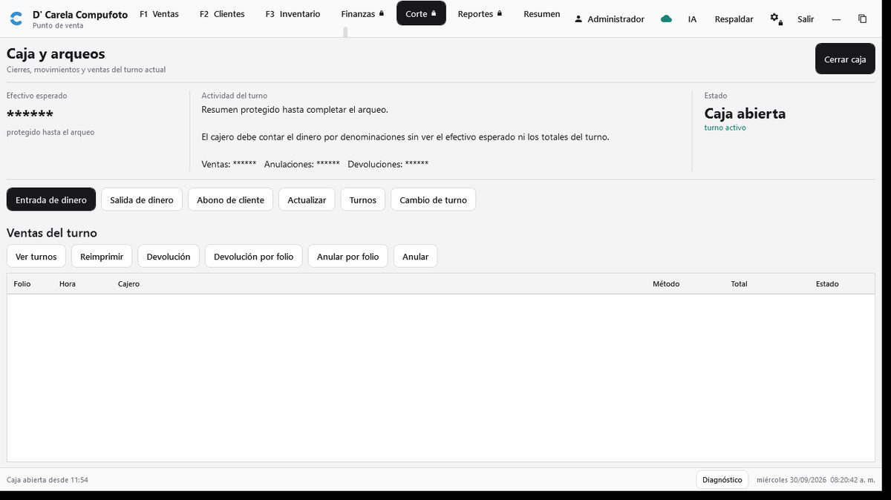
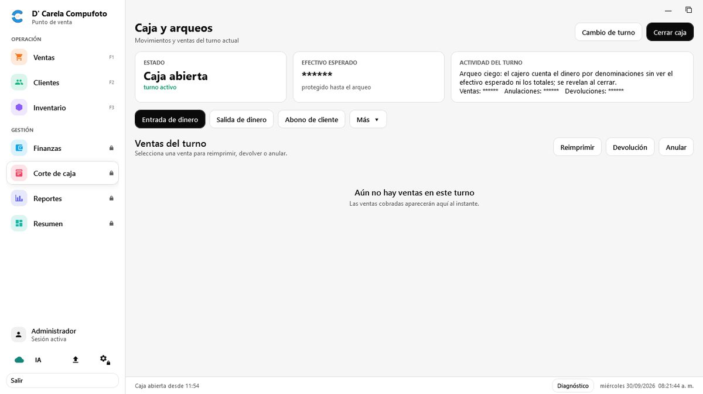
Qué cambió
- Tres tarjetas: estado, efectivo esperado (protegido hasta el arqueo) y actividad del turno.
- Acciones principales: Entrada de dinero, Salida de dinero, Abono de cliente, Cambio de turno y Cerrar caja.
- El menú Más agrupa Actualizar, Historial de turnos, Devolución de otro turno y Anular por folio.
- Reimprimir, Devolución y Anular actúan sobre la venta que selecciones en la lista.
- En el corte impreso, cada salida de dinero muestra su motivo.
Paso a paso
- Entrada/Salida: escribe el monto y el motivo (obligatorio).
- Para cerrar, pulsa Cerrar caja y cuenta el efectivo.
- Cambio de turno: el saliente cierra con arqueo y el entrante confirma lo recibido.
Arqueo (conteo de efectivo)
Una sola columna, sin desplazarse.
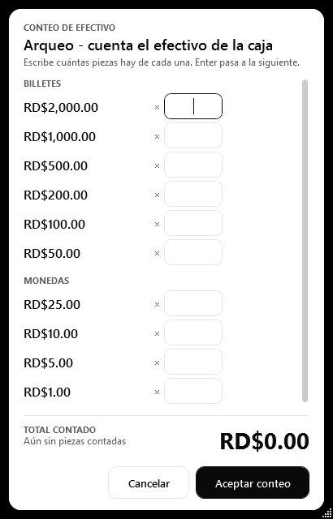
Qué cambió
- Billetes y monedas separados; escribe cuántas piezas hay de cada una.
- Enter pasa a la siguiente denominación.
- El total contado se actualiza mientras cuentas.
Paso a paso
- Cuenta cada denominación.
- Revisa el total contado.
- Pulsa Aceptar conteo.
Clientes y abonos
Lista fluida para más de 900 clientes y un detalle con su propio desplazamiento.
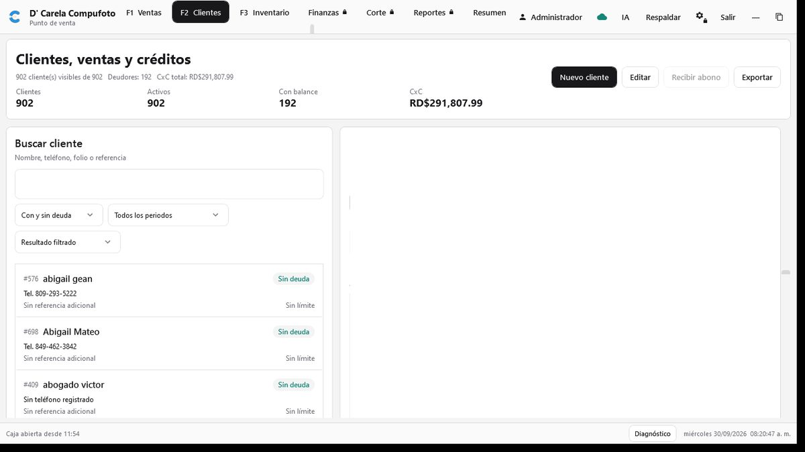
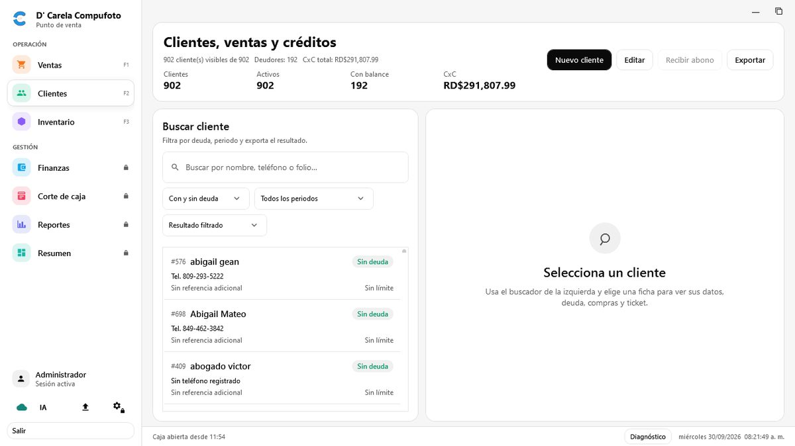
Qué cambió
- Buscador con ayuda y filtros por deuda y período.
- Sin cliente seleccionado se muestra una guía.
- Abono por efectivo o transferencia, eligiendo la cuenta que recibió el dinero; al cancelar el abono se recupera la misma cuenta.
Paso a paso
- Selecciona el cliente.
- Pulsa Recibir abono, escribe el monto y elige el método.
- Si es transferencia, elige la cuenta.
Inventario
Existencias, costos y compras en tarjetas claras.
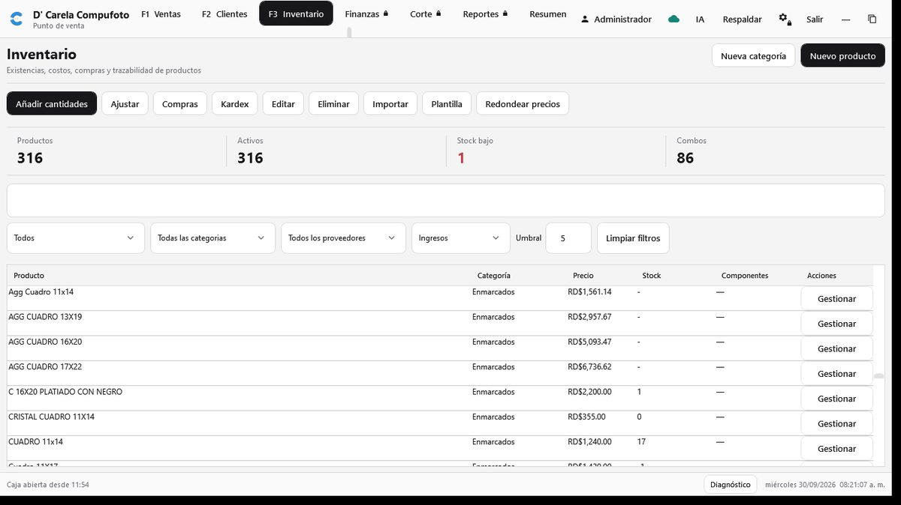
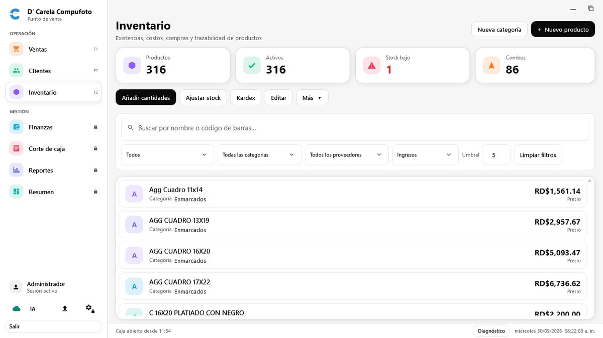
Qué cambió
- Indicadores arriba: productos, activos, stock bajo y combos.
- Acciones: Añadir cantidades, Ajustar stock, Kardex, Editar y el menú Más.
- El editor de producto muestra el margen en vivo y permite Guardar y nuevo.
Paso a paso
- Busca el producto por nombre o código.
- Usa Añadir cantidades para una entrada de mercancía.
Entrada de mercancía
Escribe o escanea el código y pulsa Enter.
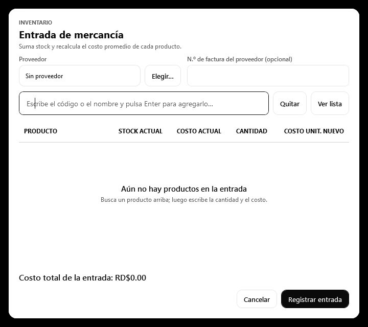
Qué cambió
- Si el producto ya estaba en la lista, suma una unidad en lugar de avisar.
- Elige proveedor y número de factura (opcional).
- Costo promedio y existencias se actualizan al registrar.
Paso a paso
- Escribe el código o nombre y pulsa Enter.
- Ajusta cantidad y costo.
- Pulsa Registrar entrada.
Finanzas
Cuentas, movimientos y pagos en cuatro pestañas: Resumen, Movimientos, Cuentas y Pagos.
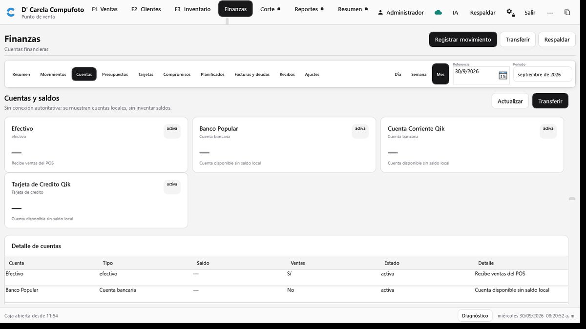
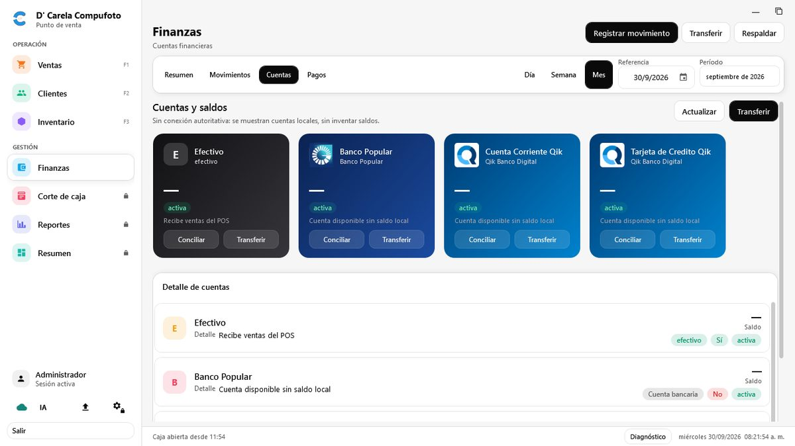
Qué cambió
- Tarjetas de cuenta con la identidad de cada banco.
- Detalle de cuentas en tarjetas, con etiquetas de estado.
- Se quitaron los paneles que no se usaban.
Paso a paso
- Abre Finanzas y elige la pestaña.
- En Cuentas ves cada saldo; Transferir mueve dinero entre cuentas.
Recibos y pagos de facturas
Se registran una sola vez y descuentan de la cuenta real.
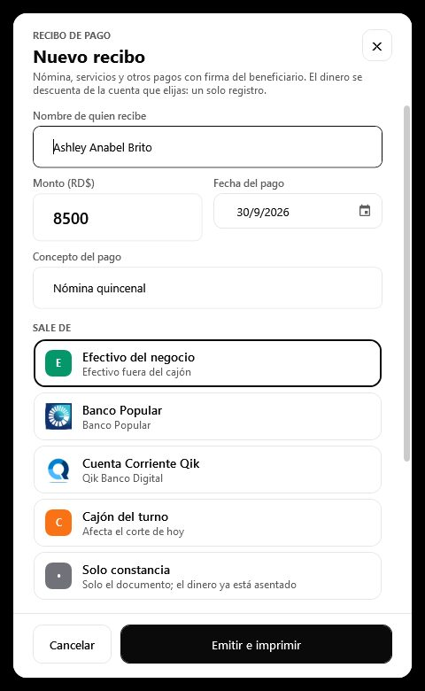
Qué cambió
- Pregunta "Sale de": efectivo del negocio, una cuenta de banco, el cajón del turno o solo constancia.
- Anular el recibo o el pago devuelve el dinero a la cuenta.
- Se evita el doble registro: ya no hay que asentar el gasto otra vez en Movimientos.
Paso a paso
- Abre el recibo o el pago.
- Escribe el monto y elige de dónde sale el dinero.
- Emite e imprime, o registra el pago.
Reportes
Ventas, ITBIS, devoluciones y métodos de pago.
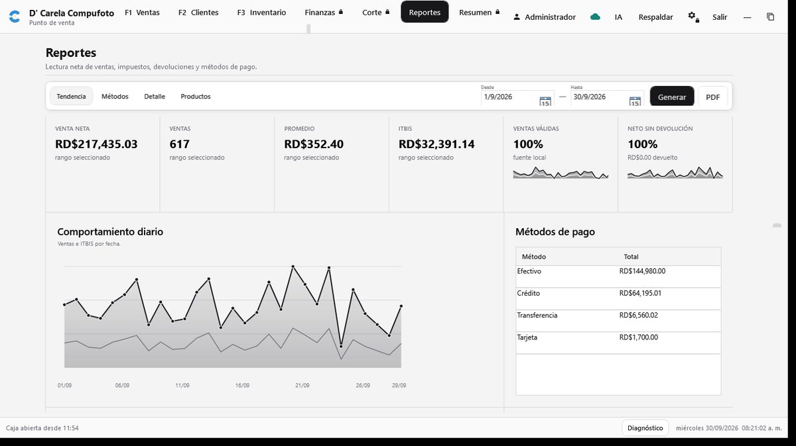
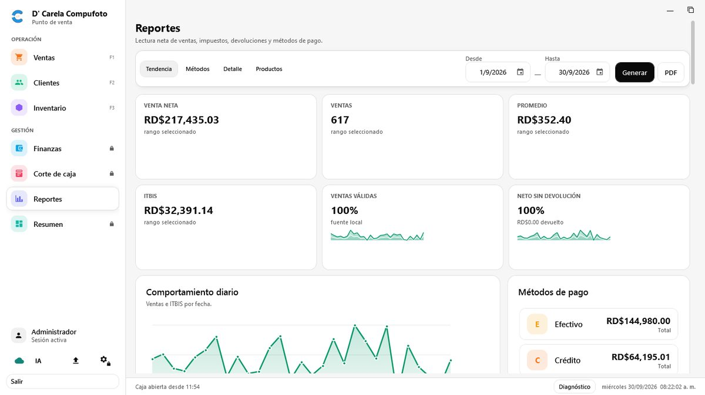
Qué cambió
- Indicadores en tarjetas y gráficos con color.
- Detalle diario y productos con mayor importe, con textos completos.
Paso a paso
- Elige el rango de fechas.
- Pulsa Generar; usa PDF para exportar.
Resumen
El pulso del día: venta neta, tickets, promedio y terminales.
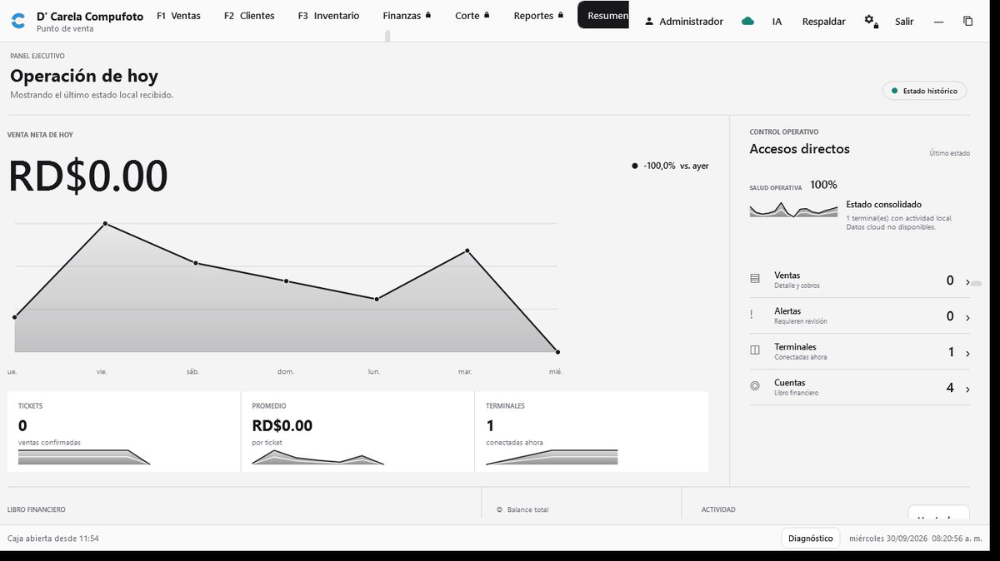
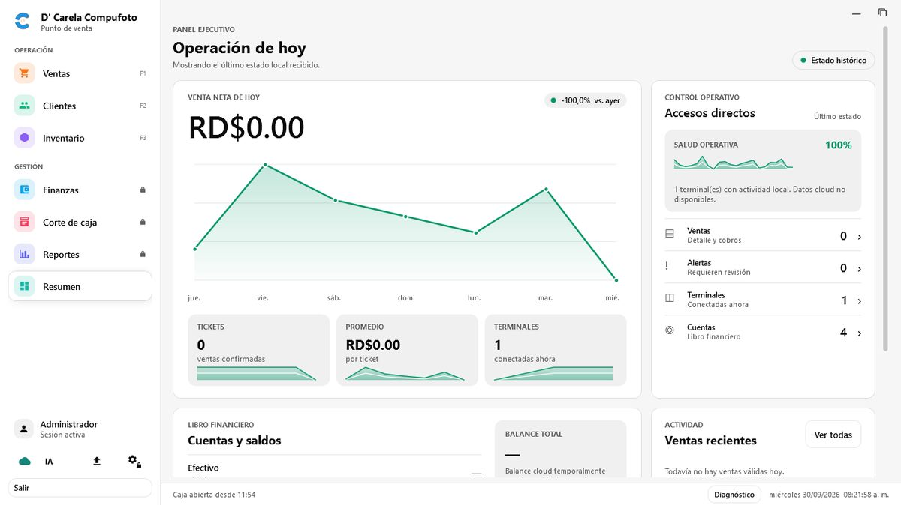
Qué cambió
- Tarjetas de venta, accesos directos, libro financiero y ventas recientes.
- El gráfico se ajusta al ancho de la ventana.
Paso a paso
- Abre Resumen para ver cómo va el día.
- Toca un acceso directo para ir a Ventas o Finanzas.
Ventas por turnos
Cada apertura, venta, arqueo y diferencia conciliados.
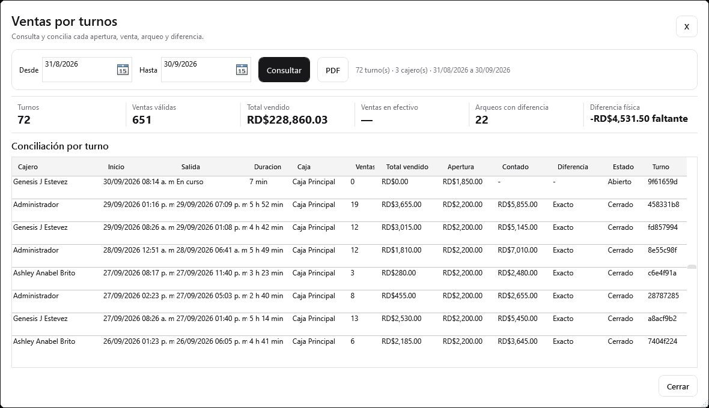
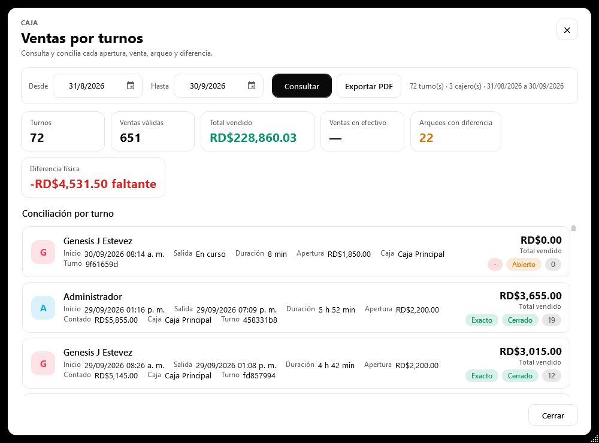
Qué cambió
- Tarjetas por turno con cajero, hora de entrada y salida, duración y diferencia.
- Exportación a PDF.
Paso a paso
- Elige el rango.
- Pulsa Consultar.
- Abre un turno para ver su detalle.
Abonos y salidas de dinero
Ventanas compactas con campos rotulados.
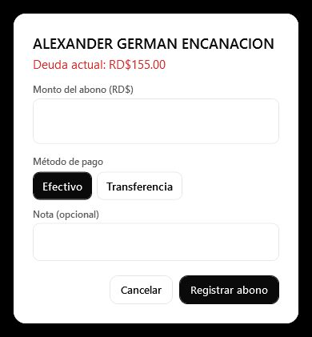
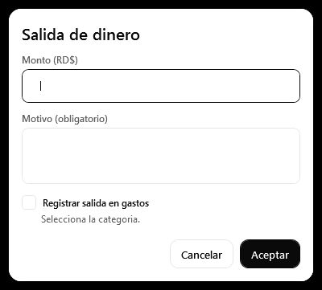
Qué cambió
- El abono usa pastillas de método y una nota de varias líneas.
- La salida de dinero exige motivo y se ajusta al contenido.
Paso a paso
- Escribe el monto.
- Escribe el motivo (obligatorio).
- Acepta.
Atajos de teclado
| F1 / F2 / F3 | Ir a Ventas / Clientes / Inventario |
|---|---|
| F6 | Pendiente: pausa la venta o abre la lista de pendientes |
| F7 / F8 | Entrada / Salida de dinero |
| F10 | Buscar producto |
| F11 | Precio de mayoreo en la línea |
| F12 | Cobrar |
| Ctrl+P | Artículo común (descripción y precio libres) |
| En el cobro: F1 | Cobrar e imprimir |
| En el cobro: F2 | Cobrar sin imprimir |
| En el cobro: F3 | Elegir cliente |
| En el cobro: F5 | Monto exacto |
| Esc | Cancelar / cerrar la ventana |
Si algo falla
- Actualización: la Caja se actualiza sola cuando no hay una venta en curso. También puedes ir a Configuración → Mantenimiento.
- Transferencia no aparece: la sucursal necesita al menos una cuenta de banco activa en Finanzas → Cuentas.
- Un texto se ve cortado: anota la pantalla y avísanos; el sistema revisa todas las pantallas antes de cada versión.
- Respaldo: tus datos viven en la carpeta CarelaPOS y el programa hace un respaldo antes de actualizarse.